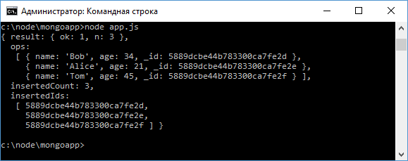
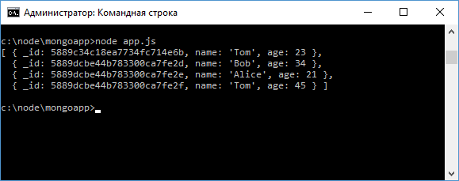
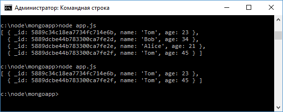

Добавление и получение данных в MongoDB
В прошлой теме были рассмотрены некоторые базовые моменты по работе с MongoDB.
Теперь более подробно рассмотрим как добавлять и получать данные из бд.
Для добавления мы можем использовать различные методы.
Если нужно добавить один объект, то применяется метод insertOne().
При добавлении набора объектов можно использовать метод insertMany().
Метод insertOne() рассматривался в прошлой статье, поэтому используем метод insertMany().
Добавим набор объектов и для этого изменим файл приложения app.js:
var mongoClient = require("mongodb").MongoClient;
var users = [{name: "Bob", age: 34} , {name: "Alice", age: 21}, {name: "Tom", age: 45}];
var url = "mongodb://localhost:27017/usersdb";
mongoClient.connect(url, function(err, db){
db.collection("users").insertMany(users, function(err, results){
console.log(results);
db.close();
});
});
Как и insertOne, метод insertMany() в качестве первого параметра принимает добавляемые данные - массив объектов, а в качестве второго - функцию обратного вызова, которая выполняется при добавлении данных.
При удачном добавлении второй параметр функции - results будет содержать добавленные данные.
Запустим приложение:
Кроме самих данных параметр results будет содержать некоторую дополнительную информацию о выполненной операции добавления.
Получение данных
Для получения данных из коллекции применяется метод find():
var mongoClient = require("mongodb").MongoClient;
var url = "mongodb://localhost:27017/usersdb";
mongoClient.connect(url, function(err, db){
if(err) return console.log(err);
db.collection("users").find().toArray(function(err, results){
console.log(results);
db.close();
});
});
Метод find возвращает специальный объект - Cursor, и чтобы получить все данные у этого объекта вызывается метод toArray().
В этот метод передается функция обратного вызова со стандартными параметрами: err (информация об ошибке при ее наличии) и result (собственно результат выборки).
И если мы запустим приложение, то увидим все ранее добавленные данные:
С помощью метода find() мы можем дополнительно отфильтровать извлекаемые документы.
Например, нам надо найти всех пользователей, у которых имя - Tom:
db.collection("users").find({name: "Tom"}).toArray(function(err, results){
console.log(results);
db.close();
});
В качестве параметра в find передается объект, который устанавливает параметры фильтрации.
В частности, что свойство name должно быть равно "Tom".
Мы можем устанавливать дополнительные критерии фильтрации, например, добавим фильтрацию по возрасту:
db.collection("users").find({name: "Tom", age: 23}).toArray(function(err, results){
console.log(results);
db.close();
});
Метод findOne() работает аналогично, только позволяет получить один документ:
mongoClient.connect(url, function(err, db){
if(err) return console.log(err);
db.collection("users").findOne(function(err, doc){
console.log(doc);
db.close();
});
});
И также в методе findOne() можно применять фильтрацию:
db.collection("users").findOne({name: "Bob"}, function(err, doc){
console.log(doc);
});